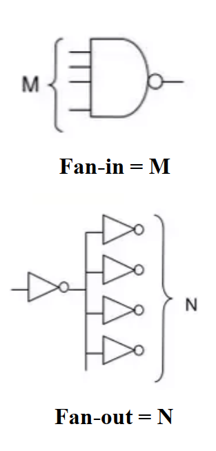
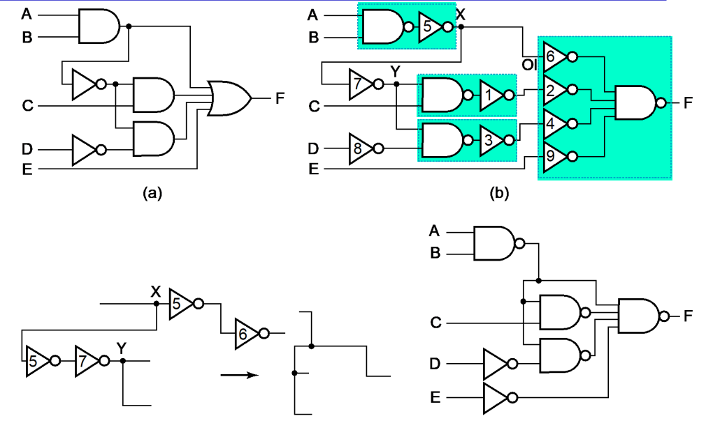
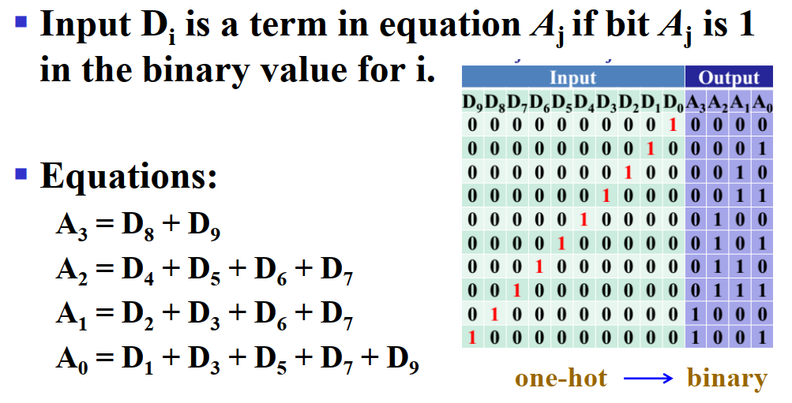
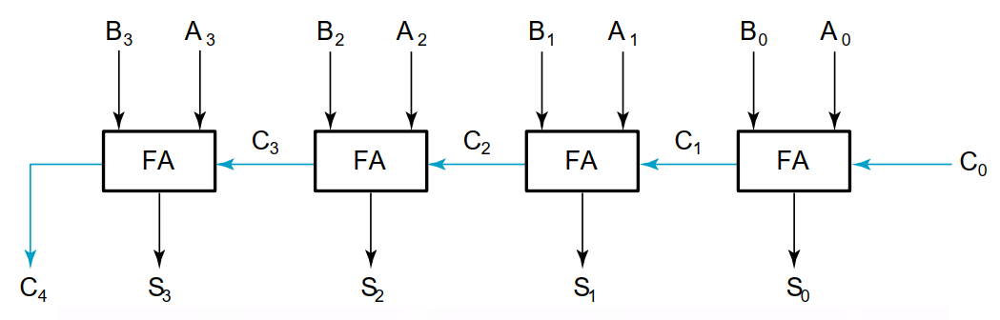
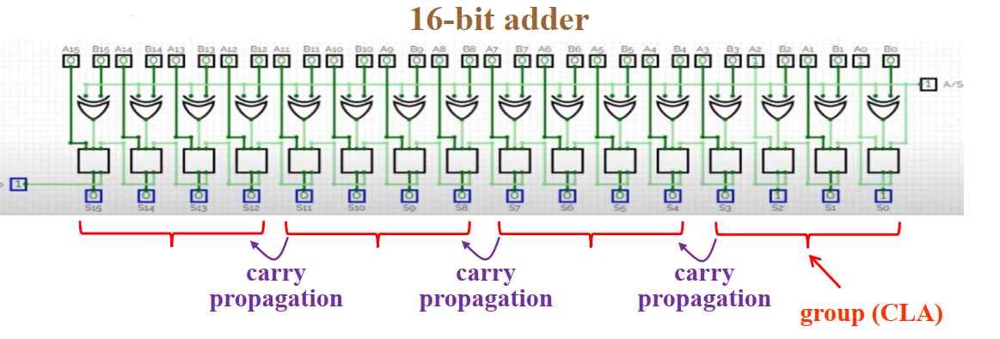
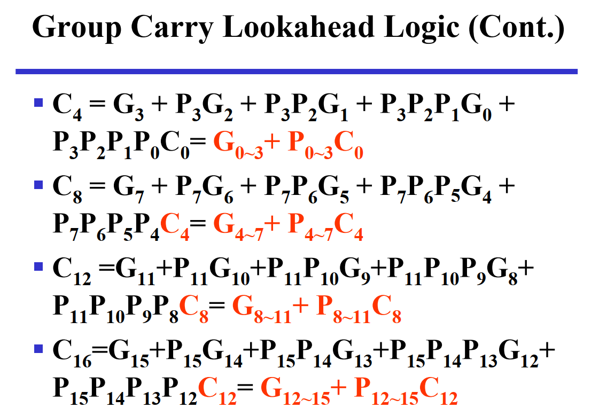
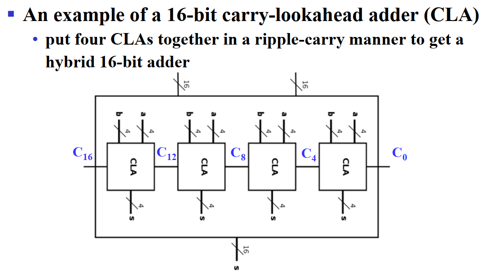
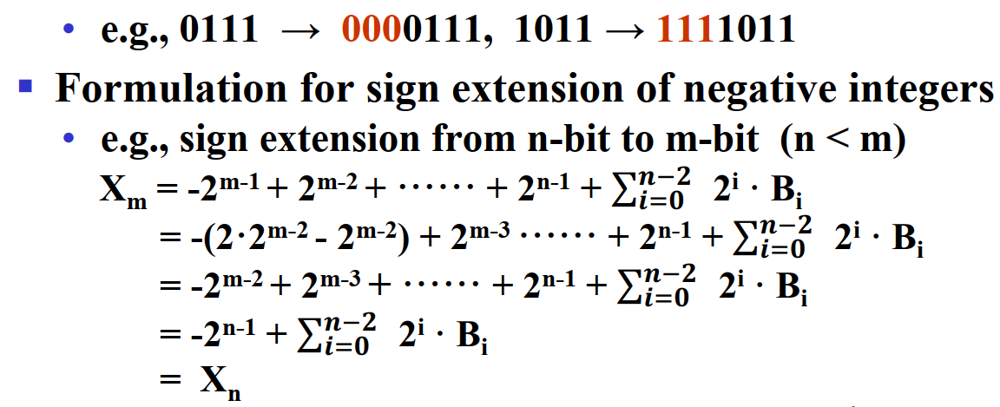
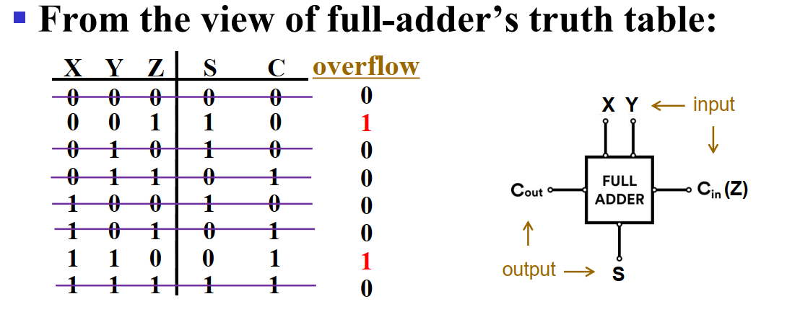
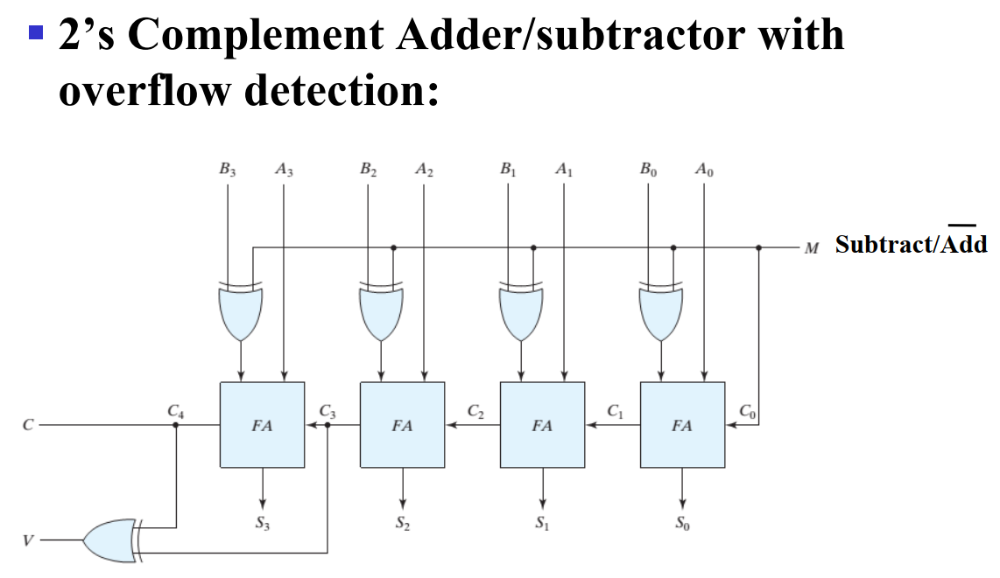

Chapter 3 Combinational Logic Design¶
约 3064 个字 预计阅读时间 15 分钟
Part 1 ：Implementation Technology and Logic Design¶
Definition Of Two Types Of Logic Circuits¶
- Combinational Circuit 组合电路
- A combinational circuit consists of logic gates whose output is a function of only the present input.
- Sequential Logic Circuit 时序逻辑电路
- Sequential logic is a type of logic circuit whose output depends not only on the present value of its input signals but on the sequence of past inputs (state or memory).
Hierarchy Design 分层设计¶
- Top-Down ： 从需求开始，自顶向下分解功能设计
- Bottom-Up ： 根据现有元件去组合目标功能
Combinational circuits¶
组合电路不包含任何 memory devices , feedback loops , one-way transmission of input signal(输入信号的单向传输) 因此，一个组合电路包含：
- m个布尔值输入
- n个布尔值输出
- n个只与当前输入有关系的变换函数
设计过程中的技术参数 Technology Parameters¶
- Technology Parameters
- fan-in , fan-out
- noise margin
- cost
- transition time
- propagation delay
- power dissipation 能量损耗
Fan-in and Fan-out¶
- Fan-in 是一个逻辑门能够接受的最多输入，如果超过了，输出会变为 undefined 或者 incorrect
- Fan-out 是一个逻辑门的输出所能连接到最多的输入（或称负载 load），且不影响电路正常性能的个数

Fan-in的原因，以与门为例

每接入一个输入，输出电压就会降 0.3 V ，接太多(如上图的7)，输出电压就不在High Level的区间了
传输延迟 Propagation Delay¶
传输延迟是输入改变对应的变化到输出改变所需的时间
相对而言，tHL 与 tLH 都是指输出的变化时间； 而tPHL 与 tPLH 则计算L和H的中点时间差

-
细品差别
-
Transition time : 过渡时间 ，专注于输出的变化，只需要看输出的时序图就可以
- Propagation delay : 传输延迟，包含输入和输出的变化的整个过程，通过比较输入和输出的偏差来表示

此外，我们还引入一个\(t_{pd}\)来统一表示\(t_{phl}和t_{plh}\)，
一般将\(t_{pd}\)设为\(\frac{t_{phl}+ t_{plh}}{2}\)或者\(max(t_{phl}+t_{plh})\)
传输延迟的模型¶
在仿真中，我们常用Delay models有
- Transport delay (传输延迟)
- Inertial delay （惯性延迟、固有延迟）
- Rejection Time (拒绝时间)
-
Transport delay：
- A change in the output in response to a change on the inputs occurs after a fixed specified delay.

-
Inertial delay：
- A pulse of duration less than the inertial delay (rejection time) does not contain enough energy to cause the device to switch.

Example：

如果考虑到了电路延迟的话，就有可能出现意想不到的结果哦~
Rejection Time
拒绝时间用来消除毛刺，当电位变化时间过于短，则不考虑
考虑这些因素，我们在logic synthesis中有必要精选Technology mapping¶

其中映射的一个重要步骤是找到原始逻辑与目标技术的逻辑等价关系
为了做到这个步骤，我们需要：Mapping to NAND gates (工艺映射)
- 将所有AND OR都用NAND 与 Inverter代替
- 将inverter push 到 fan-out 中
- 如果inverter可以配对，则消去
Example

正逻辑与负逻辑¶
正逻辑(Positive Logic)就是1为有效信号，负逻辑(Negative Logic)就是0为有效信号。
在正逻辑中的AND门相当于负逻辑中的OR门。

如上图，左侧代表正逻辑，右侧代表负逻辑
Part 2 : Combinational Logic¶
Rudimentary Logic Functions 基础函数功能¶
- 常量函数 Value - Fixing \(F = 0\) or \(F = 1\)
- 传输函数 Transferring \(F = X\)
- 逆变函数 Inverting \(F = \overline{X}\)
- 使能函数 Enabling \(F = X \cdot EN or F = X + \overline{EN}\)
![[Chapter 3 Combinational Logic Design 2024-04-04 15.38.39.excalidraw]]
Functional Blocks¶
- 译码器 Decoder
- 编码器 Encoder
- 多路选择器 Multiplexer MUX
- 信号分配器 Demultiplexer DEMUX 数逻不考
1. Decoder 译码器¶
Decoding
- the conversion of an n-bit input code to an m-bit output code with n <= m <= 2n such that each valid code word produces a unique output code
例如实验lab5的 3-8译码器 以及lab6的 BCD to 7-segment decoder
- 一个高级的Decoder的设计可以采用hierarchical design设计思想
- 例如，一个3-8译码器可以由一个2-4译码器和一个1-2译码器组合而成：

- 另外，Decoder一般会有使能信号EN来控制。

- 在这种情况下，我们也可把译码器当作demultiplexer（信号分离器、多路解调器）看待。
- b和a的值控制使能信号EN的流向，当EN =0 时，无论b、a为多少，流出去的只有0。
- 也可以利用使能信号组合更大的Decoder：

注意
考试有可能会考译码器内与门的个数
Decoder的另一个应用是，可以用Decoder加上OR门组成minterms

2. Encoder 编码器¶
Decimal-to-BCD encoder:
- Inputs:10 bits corresponding to decimal digits 0 through 9 (D0, …, D9) ——one-hot code
- one-hot code: 只有一位是1
- Outputs:4 bits with BCD codes
真值表我们很容易就能得到： 
Priority Encoder(优先级编码器):
- 优先级高的输入如果有效，则不用管优先级低的输入
- 真值表（V检测是否有效）：

优先级编码器可以用K-map狠狠化简，请慢慢化简哦~
3. Multiplexer 多路选择器¶
多路选择器可通过Decoder、AND-OR Gates、3-state buffers来实现
- 2-to-1-Line Multiplexer:

In general , an 2n-to-1-line multiplexer is combined:
- n-to-2n-line decoder
- \(2^n\times 2\ AND-OR\)
例如：
- 4-to-1-line 多路选择器：
- 如果采用三态门构建的话可以省去最后的或门，并拥有更小的Gate input cost：
- 另一种构建方法：


Success
多路选择器可以应用于不同编码之间的转换，实现任意的逻辑函数
如，Gray to Binary Code：

此外，此转换还可以将一部分输入当作常量端进行降维化简：

化简的规则为，观察真值表，当两行中A、B各自相同时，若输出分别为0、1，则可置C或~C；若输出均为0或1，则置常值0或1。
Part 3 : Arithmetic Functions¶
计算主要包括逻辑运算和算术运算，前者由于可以直接通过基本门很方便实现，所以我们不过多考虑；在此主要介绍算数运算。在计算机硬件中，承担计算工作的主要部件为 ALU(Arithmetic Logical Unit)。
诞生的条件¶
在Logic Design中，一个Arithmetic calculation(e.g. addition & subtraction)是 code translation decoder ，例如，一个N-bit的二进制加法需要一个2N-to-N+1 Decoder
但是，当N的数量变得很大，建立这么一个Decoder将会变得非常困难，由于总共有2N个变量，我们建立的Truth Table将会有 \(2^{2N}\) 行！这是Designing Impractical的！
因此，我们希望能从 Bisection(二等分) 转变为 Iterative Array .
Iterative Combinational Circuits¶
- Cell - subfunction block
- Iterative array - an array of interconnected cells
- Arithmetic Functions
- Operate on a binary vectors
- Use the same subfunction in each bit position
Function Blocks : Addition¶
发展历程: Half-Adder(HA) 半加器 -> Full-Adder(FA) 全加器 -> Ripple Carry Adder 行波加法器 -> Carry-Look-Ahead Adder(CLA) 超前进位加法器
Half-Adder 半加器¶
实际上，半加器相当于一个 2-to-2 Decoder
| X | Y | S(sum) | C(carry) |
|---|---|---|---|
| 0 | 0 | 0 | 0 |
| 0 | 1 | 1 | 0 |
| 1 | 0 | 1 | 0 |
| 1 | 1 | 0 | 1 |
经过卡诺图优化得到:
半加器构造:

Full-Adder 全加器¶
全加器与半加器类似，但是还需要加上低位进位来的 carry-in(Z) 进行加法运算。

由真值表以及卡诺图可以得到:
其中我们能发现可以复用的term，将\(XY\)称为carry generate，\(X\oplus Y\)称为carry propagate
全加器可以由两个半加器组合而成。

Ripple-Carry Binary Adder 行波加法器¶

由于全加器的Carry-in依赖于前一个全加器的输出，因此，Ripple-Carry Binary Adder的时间复杂度是Linear (or Big-O n or O(n)) 的，这使得其delay特别高，非常不友好，为了解决这个问题，我们引入了下一个概念。
Carry Lookahead Adder 超前进位加法器¶
Info
数逻对此内容不做要求，补天的可以不看了
为了探讨S、C的关系，我们可以令 \(S_i= A_i\oplus B_i\oplus C_i= P_i\oplus C_i\)，\(C_{i+1} =A_i B_i+( A_i\oplus B_i) C_i= G_i +P_i C_i\) 其中，\(G_i\)称为generate function，\(P_i\)称为propagate function。
因此，我们可以通过将\(C_i\)用初始值表示进行超前进位来使得时间复杂度从O(n)变为O(1).

Note
可以对表达方式进行化简

实际使用过程中， 由于门具有有限的fan-in，我们通常将好几个CLA进行连接来实现功能，称为 group carry lookahead ，如 


总结¶

Unsigned Subtraction¶
基本思路:
- 两个二进制数相减，如果没有出现borrow，说明结果为整数，无需额外处理
- 若出现borrow，我们需要对其进行修正，具体为用\(2^n\)减去结果，并加上负号

Note
the subtraction \(2^n-X\) is called 2’s complement of X(2进制补码，与后文的概念有所区分)
由此原理制作出来的加减法器结构相当复杂，我们希望由两种算法共用的逻辑来完成加减法操作

Complement 补码¶

Binary 1's Complement 反码¶
 你也可以直接对这个数按位取反得到反码
你也可以直接对这个数按位取反得到反码
Binary 2's Complement 补码¶
 你也可以直接对反码加一得到补码
你也可以直接对反码加一得到补码
- 另一种适用于计算机如何计算补码的方案:
- 从最低位开始向前找到第一个1，保留着这几位然后对剩下位按位取反得到补码，这样子适合计算机处理较大的数据。

Method of Complement¶
利用同余的思想，我们可以将减法运算转换为加法运算。
同余


Note
注意，carry为1的时候意味着不需要修正，为0的时候才要取补码修正哦
相比于普通的Unsigned Arithmetic ，Unsigned 2's Complement Arithmetic 将Adder和Substractor合并，节省了使用。
Signed Integers¶
在计算机中，我们将most significant bit定为符号位，其为0时代表正数，为1时代表负数
对于有符号数的加法，我们有一下四种情景


转换规则:
- 对于正数，不变；
- 对于负数，符号位不变，其它位取2's Complement，因此将补码转换回负数的时候，可以先再取2's Complement ，然后加上负号。如10011 -> 01101 -> 13 -> -13
另一种更方便的方法是认定most significant bit是negative weight，例如: \(11111=-2^4 +2^3+ 2^2+ 2^1+ 2^0=-1\)
Sign-Magnitude
历年题考过求一个负数的Sign-Magnitude(原码)，要记清楚概念
对于nagative weighting的补码，我们对其进行 sign extension 并不会改变其值 
Signed 2's Complement Arithmetic¶
- 无论是加法还是减法，将元素转换成补码进行表示；
- 如果是减法，我们将减掉的数转换成complement(指Unsigned中所说的Complement)，然后进行加法运算。然后忽略多出的carry out。如:

在补码运算中，有carry out不代表该算式overflow了，只有当两个操作数的符号位相同且与结果的符号位不同时，才有overflow发生(简单思考，就是正数加正数出现负数，或者负数加负数出现正数，说明发生了overflow)
根据上述原理，我们可以给每个B加上一个异或门来操控是应用加法 (0) 还是减法 (1)

碎碎念
其实我感觉这属于unsigned的...哈...哈哈......
Note
请注意，当应用减法的时候，C0要置1，所以我们将S接入C0
如果我们希望用一种更为理化的思想来检测是否overflow，可以先认定\(X_{k-1}\)为操作数A的符号位，\(Y_{k-1}\)为操作数B的符号位，\(S_{k-1}\)为结果的符号位，则\(V=X_{k-1} Y_{k-1}\overline {S_{k-1}}+\overline {X_{k-1}}\overline {Y_{k-1}} S_{k-1}\) 更加简化这个式子，可以直接认定\(V=C_{k-1} \oplus C_{k-2}\) 
这意味着我们只需要将最后两个carry out用异或门连接起来就可以得到V: 
总结¶

Arithmetic Logic Unit (ALU)¶
Specification：
- two n-bit input : \(A_0- A_{n-1}, B_0- B_{n-1}\)
- mode selection : arithmetic/logical
- operation selection : add/sub/inc/dec or and/or/not/xor
- 1-bit carry input and carry output
一个简单的逻辑ALU

一个简单的算数ALU

Note
请注意，Y中的1指所有位均为1的数，因此\(G=A+2^n-1=A-1\)